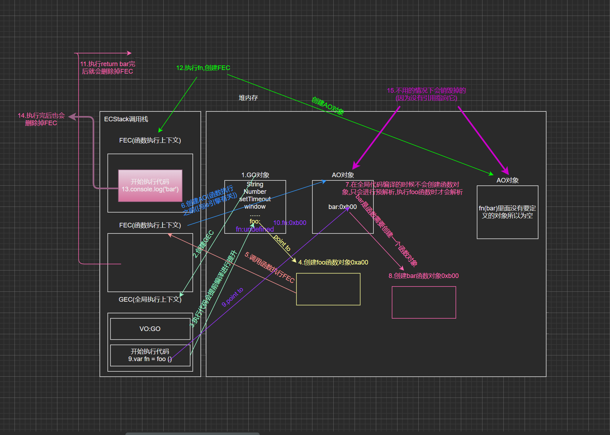
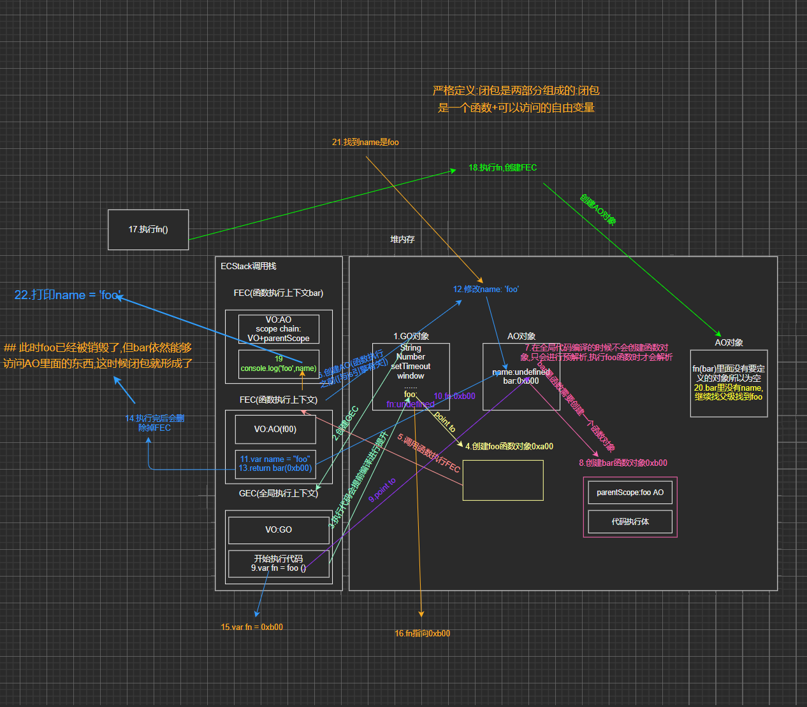
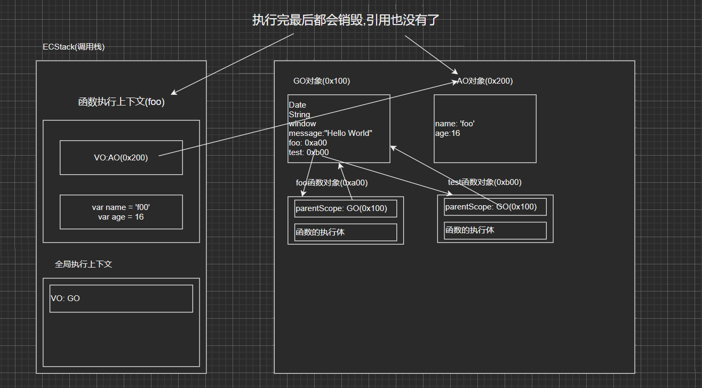
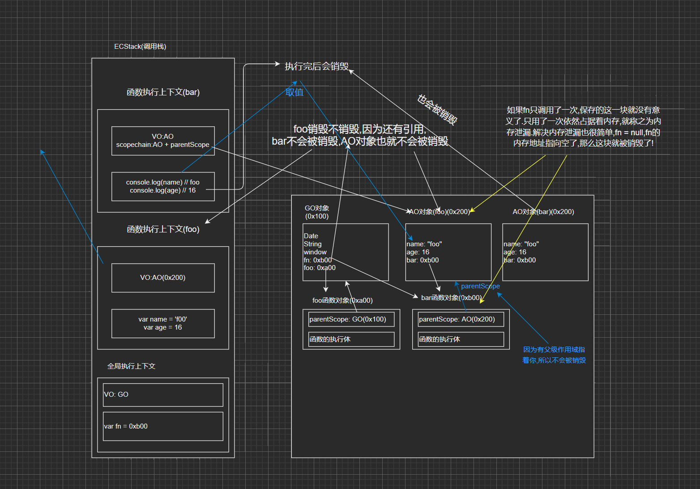

# 1.JS 闭包的定义
- 这里先来看一下闭包的定义，分成两个：在计算机科学中和在 JavaScript 中。
- 在计算机科学中对闭包的定义（维基百科）：
- 闭包（英语：Closure），又称词法闭包（Lexical Closure）或函数闭包（function closures）；
- 是在支持 头等函数 的编程语言中，实现词法绑定的一种技术；
- 闭包在实现上是一个结构体，它存储了一个函数和一个关联的环境（相当于一个符号查找表）；
- 闭包跟函数最大的区别在于，当捕捉闭包的时候，它的 自由变量 会在补充时被确定，这样即使脱离了捕捉时的上下文，它也能照常运行；
- 闭包的概念出现于 60 年代，最早实现闭包的程序是 Scheme，那么我们就可以理解为什么 JavaScript 中有闭包：
- 因为 JavaScript 中有大量的设计是来源于 Scheme 的；
- 我们再来看一下 MDN 对 JavaScript 闭包的解释：
- 一个函数和对其周围状态（lexical environment，词法环境）的引用捆绑在一起（或者说函数被引用包围），这样的组合就是闭包（closure）；
- 也就是说，闭包让你可以在一个内层函数中访问到其外层函数的作用域；
- 在 JavaScript 中，每当创建一个函数，闭包就会在函数创建的同时被创建出来；
- 那么 coderwhy 老师的理解和总结：
- 一个普通的函数 function，如果它可以访问外层作用于的自由变量，那么这个函数就是一个闭包；
- 从广义的角度来说：JavaScript 中的函数都是闭包；
- 从狭义的角度来说：JavaScript 中一个函数，如果访问了外层作用于的变量，那么它是一个闭包；
# 2. 高阶函数的执行过程
function foo() { | |
function bar() { | |
console.log("bar"); | |
} | |
return bar | |
} | |
var fn = foo() | |
fn() |
参考：

# 3. 闭包执行过程
function foo() { | |
var name = 'nekoaimer' | |
function bar() { | |
console.log("bar",name); | |
} | |
return bar | |
} | |
var fn = foo() | |
fn() |
参考：这几张图画了贼久可能有些许偏差吧… 欢迎指正！

# 例子
var name = 'nekoaimer' | |
function foo(){ | |
console.log(name) | |
} | |
//foo 是一个函数也可以访问外层作用域就可称之为闭包 | |
foo() |
# 4. 闭包的内存泄露
# 函数的执行过程内存
function foo() { | |
var name = "foo" | |
var age = 16 | |
} | |
function bar() { | |
console.log("bar") | |
} | |
foo() | |
bar() |
参考：

# 闭包的内存表现和泄露
function foo() { | |
var name = 'foo' | |
var age = 16 | |
function bar() { | |
console.log(name); | |
console.log(age) | |
} | |
return bar | |
} | |
var fn = foo() | |
fn() |
参考：

# JS 闭包内存泄漏案例
function createFnArray() { | |
// var arr = [1, 1, 1, 1, 1, 1, 1, 1,1, 1,1, 1,1 ] | |
// 占据的空间是 4M x 100 + 其他的内存 = 400M+ | |
// 1 -> number -> 8byte -> 8M | |
//js: 10 3.14 -> number -> 8byte ? js 引擎 | |
// 8byte => 2 的 64 次方 => 4byte | |
// 小的数字类型，在 v8 中成为 Sim, 小数字 2 的 32 次方 | |
var arr = new Array(1024 * 1024).fill(1) | |
return function () { | |
console.log(arr.length) | |
} | |
} | |
// var arrayFn = createFnArray() | |
// arrayFn = null | |
setTimeout(() => { | |
// 100 * 100 = 10000 = 10s | |
var arrayFns = [] | |
for (var i = 0; i < 100; i++) { | |
setTimeout(() => { | |
arrayFns.push(createFnArray()) | |
}, i * 100); | |
} | |
// arrayFns = null | |
setTimeout(() => { | |
for (var i = 0; i < 50; i++) { | |
setTimeout(() => { | |
arrayFns.pop() | |
}, 100 * i); | |
} | |
}, 10000); | |
}, 3000) |
# JS 闭包引用的自用变量销毁
function foo() {
var name = "nekoaimer"
var age = 16
function bar() {
debugger
console.log(name)
console.log(age)
}
return bar
}
var fn = foo()
fn()
可自行测试～